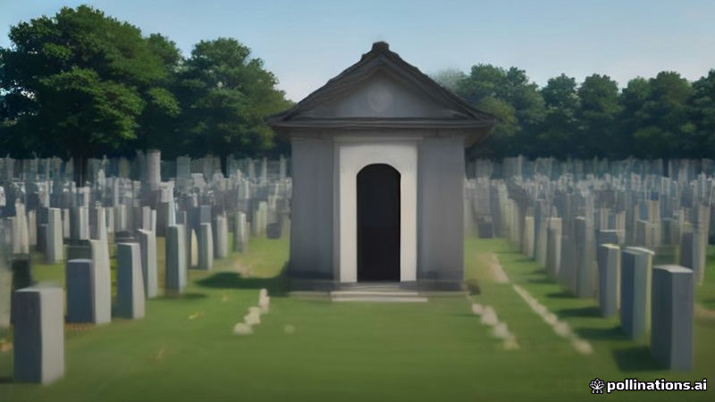

পিট হেগসেথকে আরলিংটনের অজানা সৈনিকের সমাধিতে গার্ড তিরস্কার
DW, France 24 · 2026-11-12
AI-generated illustrationএকজন গার্ড ভেটেরান্স ডে অনুষ্ঠানের সময় গম্ভীর স্মৃতিস্তম্ভে হাসি ও ছবি তোলার জন্য সেক্রেটারি, তার স্ত্রী ও সহকর্মীদের তিরস্কার করেন।
DW অনুসারে, মার্কিন প্রতিরক্ষা সচিব পিট হেগসেথ এবং তার সঙ্গীরা আরলিংটন ন্যাশনাল সেমেটারির অজানা সৈনিকের সমাধিতে গার্ডের তিরস্কার মুখোমুখি হন।
France 24 জানিয়েছে, ভেটেরান্স ডে অনুষ্ঠানের সময় হেগসেথের স্ত্রী ও সহকারীরা হাসি ও ছবি তোলার সময় গার্ড তাদের নীরব করেন, যা সমাধির গম্ভীর পরিবেশকে রক্ষা করার জন্য করা হয়।
Written by AI from facts reported by the outlets named above. It may contain errors; check the original reporting.English version
US Defense Secretary Pete Hegseth reprimanded at Arlington's Tomb of the Unknown Soldier
According to DW, US Defense Secretary Pete Hegseth and his entourage were reprimanded by a guard at the Tomb of the Unknown Soldier in Arlington National Cemetery.
France 24 reported that the group, including the secretary’s wife and aides, were heard laughing and taking pictures during a Veterans Day ceremony, prompting the guard to silence them at the solemn site.